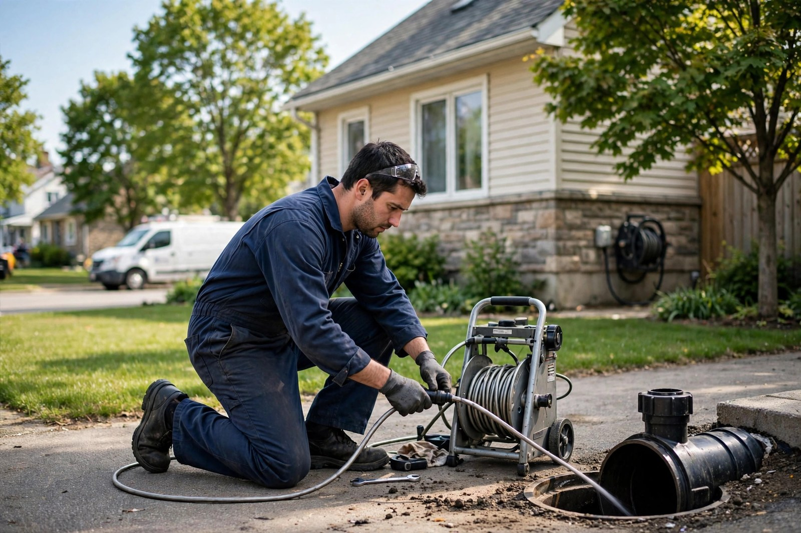
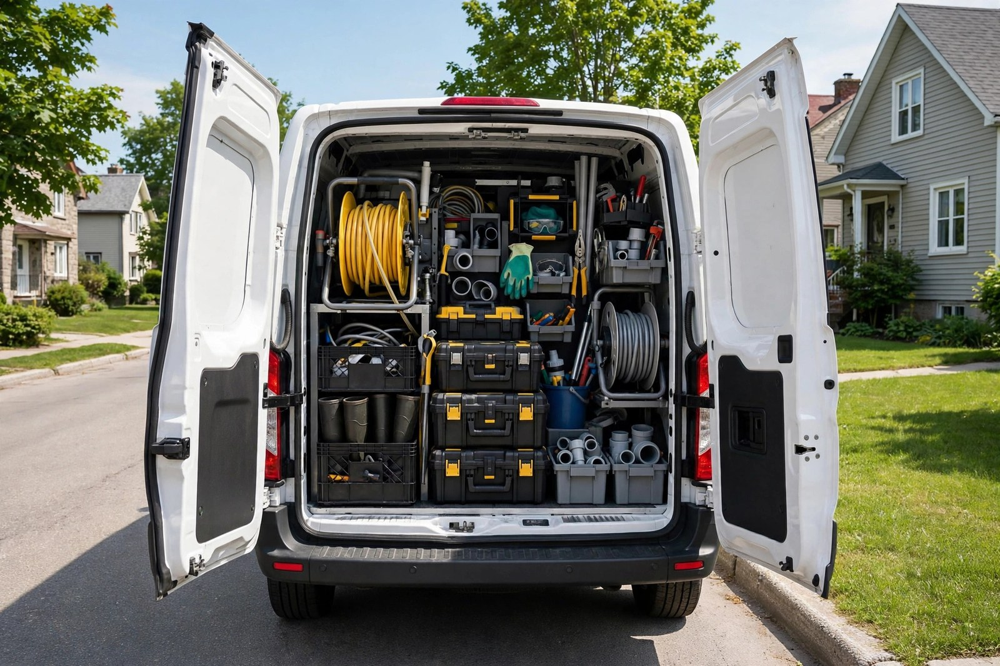

Débouchage d'égouts
Dégagement de l'égout principal — fini les refoulements et les drains qui ne coulent plus.

Saint-Jean-sur-Richelieu, Québec · Spécialiste du débouchage d'égouts
STD Débouchage d'Égout dégage vos égouts et vos drains — un appel, un diagnostic clair, un travail propre et bien fait.
Ce que nous faisons
Dégagement de l'égout principal — fini les refoulements et les drains qui ne coulent plus.
Drains lents, gargouillements ou blocages — on rétablit un écoulement normal.
On localise le blocage avant d'agir — pas de devinettes, un diagnostic précis.
Entretien régulier de vos égouts et drains pour prévenir les prochains blocages.
Interventions à domicile — un travail propre, respectueux de votre propriété.
Refoulement d'égout ou blocage complet — appelez vite, on intervient.
Pourquoi nous choisir
Un égout bouché, ça ne peut pas attendre. On vous dit franchement ce qui bloque, on confirme le prix avant de commencer, et on laisse l'endroit propre en repartant.
En intervention

Contact direct
Bon à savoir
Évitez d'utiliser l'eau et appelez-nous au (450) 684-0152. On évalue la situation et on intervient pour dégager l'égout.
La plupart des débouchages se règlent en une seule visite, souvent en moins d'une heure, selon la gravité du blocage.
Lundi au vendredi, de 8 h 30 à 17 h 00. Fermé le samedi et le dimanche.
Appelez-nous directement au (450) 684-0152 pendant nos heures d'ouverture — on vous répond vite.
Appelez-nous